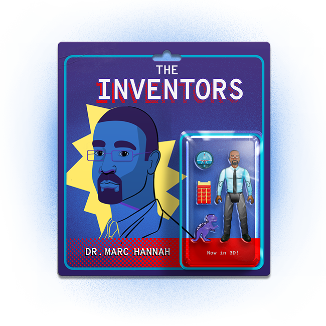

Subscribe to the podcast to receive new episodes as soon as we release them
Season 6, Episode 4
Dr. Marc Hannah: The Computer Scientist Who Brought Worlds to Life

Sometimes an inventor designs a device for a specific purpose. Sometimes it’s to try something new. But successful inventions often shape industries beyond those they initially intended. Dr. Marc Hannah built an invention with far bigger effects than anyone could have imagined—like bringing dinosaurs to life, building liquid robots, and letting the Titanic set sail one more time.
Raqi Syed gives some context with the evolution of special effects in the movie industry. Mark Grossman explains how the graphics world was more than ready for an upgrade. Tom Davis recounts the difficulties that he and his team had getting people to understand what was possible with the Geometry Engine. Luckily, Steve “Spaz” Williams defied his bosses and showed them its power to bring worlds to life, starting with the world of Jurassic Park. Camille Cellucci explains that from then on, everything changed for the movie industry—and for the broader world of graphics.
00:03 - Saron Yitbarek
You probably remember the moment Dr. Alan Grant, paleontologist, steps across a field in Jurassic Park and falls to his knees. He can barely speak.
00:19 - Saron Yitbarek
It was 1993. Nobody had seen such a realistic dinosaur before. The guy on screen did exactly what the audience did and gaped at that marvel and asked...
00:32 - Voice Actor
How did you do this?
00:35 - Saron Yitbarek
In the movie, Grant is told some pseudoscience mumbo-jumbo. But in reality, those dinosaurs were brought to photo-realistic life, thanks to a technical breakthrough in the world of 3D graphics. A new breed of supercharged machine capable of processing computer graphics like never before.
00:58 - Saron Yitbarek
I'm Saron Yitbarek and this is Command Line Heroes, an original podcast from Red Hat. This season we've been tracking the lives and inventions of heroes who never quite got their due. Men and women who changed our tech reality, but whose names don't often appear in the history books. Heroes, like the brilliant computer scientist whose work brought those dinosaurs to life on the silver screen.
01:26 - Saron Yitbarek
This is the story of Silicon Graphics Incorporated, the high-performance hardware and software company that revolutionized not just the movies, but a whole arena of graphics–shaking up our ability to model cars, to drill for oil, and even to plot a course to the stars.
01:45 - Saron Yitbarek
But our story begins with a student at Stanford University who was literally dreaming of taking flight. Marc Hannah was a promising electrical engineering grad student at Stanford, with a PhD fellowship from Bell Laboratories. But he was unsure where to apply all that talent. One day, he was talking with a professor about his desire to build a flight simulator.
02:11 - Marc Hannah
I did want to be a pilot at some point and thought about it when I first came to Stanford, and was fascinated by flight simulators and wanted to have my own flight simulator in the basement. So that was part of my interest in 3D graphics, in particular, real-time 3D graphics.
02:27 - Saron Yitbarek
That dream didn't really have wings though, because back then, in the early 1980s, a flight simulator was a multimillion-dollar machine. Still, the mention of graphics got him an introduction to someone down the hall, a new professor by the name of Jim Clark.
02:45 - Saron Yitbarek
Clark had a dream of his own. He wanted to revolutionize 3D graphics, and he was looking for bright young students like Marc Hannah to join his team. But this wasn't just an academic pursuit. Upping the computer graphics game could potentially be big business. Computing power was racing forward and somebody was going to figure out a way to apply that power to graphics.
03:10 - Raqi Syed
My name is Raqi Syed. I'm a visual effects artist and a senior lecturer at the Victoria University of Wellington in New Zealand.
03:21 - Saron Yitbarek
We asked Syed to help us track the evolution of graphics by describing the history of special effects in film, since that's where most of us saw that evolution take place.
03:31 - Raqi Syed
2001: A Space Odyssey is really important because Doug Trumbull, the VFX (video effects) supervisor on that film, was really interested in building upon what was called slit-scan technology. He built this machine, which was probably made out of bespoke IBM computers. It was as big as a room. It was 30 feet by 30 feet, and it was a giant machine that they ran for months in order to get what came to be known as the famous Star Gate sequence.
04:03 - Saron Yitbarek
2001: A Space Odyssey set a new bar. And six years later in 1977, Star Wars pushed that bar even higher. The Star Wars team delivered deadly blasters and jumps into hyperspace using a system that included microprocessors, but there was still no actual software involved. It was all controlled by knobs and wires.
04:29 - Raqi Syed
It was a pretty good result, but it kind of set the stage for something that has sort of haunted and propelled motion graphics, computer graphics, and VFX ever since, which is that George Lucas wanted more. He wanted to go further. He knew that he wanted to make films, not with tens of visual effects shots, but hundreds of visual effects shots. So he needed a motion control system that could deliver shots at scale and with consistent results.
05:01 - Saron Yitbarek
That drive to put on screen what a filmmaker envisioned was emblematic of a much greater desire. Movies were just the most obvious field. There were a hundred other industries where our ability to picture things through computer graphics was just as crucial.
05:18 - Saron Yitbarek
Jim Clark over at Stanford saw that opportunity and wanted to jump on it. He knew that if he could be first to market with the machine that brought those visions to life… well, there was gold in those 3D hills.
05:35 - Saron Yitbarek
Mark Grossman, a co-founder of Silicon Graphics, who today is a principal architect at Microsoft, remembers how ready the graphics world was for an upgrade.
05:45 - Mark Grossman
Back then, the typical workhorse computer was a DEC VAX, which was all of one MIPS, right? 1 million instructions per second, that was the benchmark. Of course, today's smartphone can do 20,000 times that in your pocket. But back then, you just didn't have the compute power. So yeah, things were just expensive.
06:19 - Saron Yitbarek
Jim Clark's solution for a more powerful and also more affordable machine was something he called The Geometry Engine. When Marc Hannah walked down that hall at Stanford and knocked on the professor's door, it didn't take long for the ambitious Clark to realize this was someone who could help him bring that Geometry Engine to life. Marc Hannah explained the scope of what they wanted to build.
06:45 - Marc Hannah
It's a chip and an architecture. It's a multiprocessor architecture. So you have several copies of this Geometry Engine chip arranged in a pipeline, each one connected to the next, and it's performing the mathematical calculations that are required to take a 3D description of objects and their placement within this virtual environment, and mapping that onto a screen representation. There are kind-of three major steps associated with that. The set of transformations of the vertices, these are sort of polygonal representations, joining triangles. You have to map the vertices into their position in this virtual world space. That second step is to clip out the parts of the image that are outside of what the camera would be seeing. And then the final step is to map that clipped version of what you're viewing into the 2D screen space. There's a scaling to the screen dimensions, screen coordinates, and a perspective division so that the things farther away look smaller. Those are kind-of the three major steps in this geometry pipeline.
08:05 - Saron Yitbarek
What Jim Clark and Marc Hannah were creating would be the first VLSI–very large-scale integration–applied to a geometry pipeline. The original Geometry Engine had about 40,000 transistors that had to be integrated into a single device. If they succeeded, it would supercharge the mathematical operations that make it possible to display and manipulate 3D graphics, and they’d dramatically bring down costs at the same time.
08:37 - Marc Hannah
When I started working with Jim, this idea of systems designers doing custom chips was just starting to happen, which meant that you could design a custom chip that performed a lot of the functions that previously required multiple chips and some expensive chips. So, in volume, you can get the cost of things down and still provide very high performance. That idea of doing custom silicon, as opposed to just putting together standard off-the-shelf chips, was really critical to bring down the cost of this computing.
09:12 - Saron Yitbarek
At the time, government agencies like DARPA would fund those in academia to pursue projects like this, and then innovators like Clark and Hannah were free to license their products and spin off lucrative businesses.
09:26 - Marc Hannah
At some point in our work on the Geometry Engine and what we called the smart image memory rasterization, Jim came to me and said, "I want to start a company based upon this technology."
09:40 - Marc Hannah
The thought had never really crossed my mind, but I was certainly interested in delivering the technology to a wider marketplace. And frankly, my thought was, "Okay, this is exciting to work on. There's potential to make a bunch of money." Not that that was my motivation, but I said, "Well, if it doesn't work out, I can always get a real job." So, basically the team that was working on this DARPA-sponsored project to design these chips and to show a working prototype, Jim pulled together the team and eventually we went off and started SGI.
10:27 - Saron Yitbarek
SGI. Otherwise known as Silicon Graphics Incorporated. Marc Hannah became chief scientist and also the architect of their machines. Some co-founders like Mark Grossman had no idea how big this company was about to get.
10:45 - Mark Grossman
I had a girlfriend in LA at the time and I told her, "Well, my professor wants me to help out on this project, I’ll be back down in a year or so.” That turned out not to be true. I just didn't have the vision, I guess.
11:06 - Saron Yitbarek
Others, though, had a pretty clear idea that a lucrative 3D graphics revolution was now underway. When Fortune magazine caught whiff of this new company and asked Marc Hannah for an interview, he told them SGI would, in a decade, be making $1 billion a year.
11:23 - Saron Yitbarek
By 1983, Silicon Graphics had manufactured their first UNIX-powered machines, and they'd begun showing them off to potential customers. But not everyone understood what to do with them. Tom Davis, another SGI co-founder, explains.
11:52 - Tom Davis
A lot of the potential customers had no idea how they would use a product like this, how they would use three-dimensional graphics. We did have one model, which was Jim Clark's old Volkswagen. We could make a little wireframe Volkswagen twist around on the screen. So then we showed it to, I forget whether it's Boeing or Lockheed, one of those huge aircraft companies, showed it to the engineers there, and we showed them our thing, and we had a little Volkswagen that we could twist around on the screen. The engineer there said, "Wow, that is really cool. It's too bad we make airplanes, not cars." Wait a second. This could be anything. And it was this inability to see.
12:44 - Saron Yitbarek
Soon enough, though, everyone was seeing just fine, and it wasn't just airplane manufacturers or car manufacturers, either. It was also NASA, which became SGI's biggest client a year after they launched. NASA purchased 18 of their Iris workstations. And, of course, it was also the movie industry. Through the movies of the 1990s, ordinary people came to understand that 3D graphics were evolving–right before their eyes.
13:13 - Steve Williams
My name is Steve Williams. In the movies, I go by Steve Spaz Williams. That's my movie credits.
13:19 - Saron Yitbarek
Steve “Spaz” Williams, as he's known in the industry, was the chief animator for Industrial Light & Magic in the 1990s. He was one of the wizards behind The Abyss, Terminator 2, and Jurassic Park. And if all that wizardry had a magic wand, William says it was those SGI machines.
13:38 - Steve Williams
Well, they completely changed everything we were doing. Everything in the world of visual effects was practical. Rubber prosthetics and miniatures that were shot and composited onto the actual IP, or the original inner positive or negative of the film. Inevitably, we ended up inventing creatures and scenarios and doing it digitally on a box, and then scanning it out so there's no generation loss of film. Not only that, it freed us up to sort-of experiment with this synthetic world that we were dealing with. We were not held to the limitations of the practical world, like equipment breaking, rubber prosthetics, deterioration of objects. So, from that standpoint, the entire industry had changed.
14:27 - Saron Yitbarek
Williams feels Marc Hannah's work on those machines, especially when combined with design software from Alias, was a bold leap forward, one that allowed others to push the limits of what was possible.
14:41 - Steve Williams
There's a lot of these mavericks that are always looking at convention and questioning convention, and I think Hannah saw a better way. Then, of course, they're seen as heretics, very much like I was seen as a heretic for trying to use a machine to build a digital creature. So, one begets the other.
15:04 - Saron Yitbarek
It's hard to remember just how groundbreaking it was when Williams wanted to use SGI machines to build those digital creatures. But, for Jurassic Park, Williams actually had to convince Steven Spielberg that computer graphics were the best way to go. He was initially told he'd simply be adding motion blur to a bunch of stop-motion work.
15:26 - Steve Williams
And I said, "Why don't we just build everything in computer graphics, all the creatures?" And everyone went, "Oh no, no, you can't do it. Impossible." So I was literally instructed by Dennis Muren, the head visual effects, not to bother trying. I said "(beep) that," right? I secretly started to build our T-Rex on my own time, and I did exactly what I did with the T-1000, which was I built a set of bones that did walk cycles.
15:53 - Steve Williams
I had a walking bone done in November of 1991, and I had it playing on a monitor when Frank Marshall and Kathleen Kennedy and Spielberg and Lucas, they all came walking in, because I knew I wasn't going to be allowed to show it. And they saw it and they freaked out, and this is exactly what happened, and everything changed.
16:11 - Saron Yitbarek
Marc Hannah remembers that moment exactly. The T-1000 in Terminator 2, with all that liquid metal, was amazing, but it didn't need to look realistic. Those dinosaurs, though, were next level.
16:24 - Marc Hannah
Yeah, actually we rented out, there was a movie theater across the street from where SGI was. A bunch of SGI employees went over to watch the movie, and I remember one scene in particular, I think it was when the velociraptor is running through the kitchen or something like that. You're into the movie, there's all this tension and so forth, and at the end of the scene, it just struck me that all those dinosaurs were computer generated and they just looked incredibly real. You wanted it to look like a real dinosaur, and it really did.
17:06 - Saron Yitbarek
Jurassic Park was a tipping point. The 1990s rolled on with profound leaps in special effects, all powered by SGI's machines. And then in 1997, there was Titanic. Camille Cellucci was the VFX producer on that film, and she remembers its profound impact.
17:25 - Camille Cellucci
There's a pullback shot from, you're on the deck of the Titanic, and you see people walking and we pull all the way, all the way back to the ship being a tiny ship on this vast ocean. That shot was a combination of technology that was unheard of at time, one of which is the digital water, and that also wouldn't have been possible without the compute power of SGI machines and what SGI machines inspired at the time. We would populate that entire ship by people walking around that looked real, but were in essence CG doubles, and that would not have been possible even a few years earlier. We were breaking everything to try to make it work.
18:15 - Saron Yitbarek
Cellucci's team was pushing the limit, but they had also been given more to work with. She describes a positive feedback loop where earlier successes led to more support for special effects.
18:27 - Camille Cellucci
The earlier work in CG, things like The Abyss, things like Terminator, started to have the studio executives see their box office ramifications for great visual effects work. And so seeing box office increases as a result of visual effects was something that then allowed us to have bigger budgets.
19:00 - Saron Yitbarek
Suddenly, investing in 3D graphics was a pretty sure bet, and that meant everybody needed an SGI machine. Remember that prediction Hannah made for Fortune magazine, a billion dollars a year? Well, one decade after they launched, Silicon Graphics made that billion. Waves of competitors were nipping at their heels. Companies like Sun, HP, and Apollo. But SGI was the behemoth in the field. By the mid-90s, they seemed untouchable with thousands of employees on several continents and an 11-building headquarters in the heart of Silicon Valley. But then again, even T-Rex seemed indomitable before that comet came crashing out of the sky.
19:53 - Marc Hannah
I've always been driven by value, let's say. Providing maximum value for minimum cost. Maybe I'm just cheap, I don't know.
20:05 - Saron Yitbarek
Marc Hannah's breakthrough–using the Geometry Engine to lower pricing so that more customers had access to enormous computing power–had created a heyday in film. There were moments in the 90s–when the liquid chrome T-1000 first appeared in Terminator 2, when those dinosaurs barreled their way through Jurassic Park–those were extraordinary film moments that leapt ahead of audience expectations in a way that hasn't really happened since. But SGI's role as this kingpin of graphics couldn't last forever. As PC-based graphics cards improved and chips got faster and faster, SGI's business model weakened. Cheaper options wooed customers away. Hannah saw that PCs were becoming more and more powerful. Meanwhile, SGI's high-end workstations ranging from $50,000 to $200,000 weren't going to be as attractive down the road.
21:06 - Marc Hannah
There would be no growth there. We needed to evolve into higher-end systems that were defined as servers, where even for the graphics, you do most of the work in these modular servers and then you just send the bits down the wire. Initially, at that time in the mid-90s, the enterprise networks, the local area networks used within companies were fast enough, I felt, that you could just send pixels down and centralize and you didn't have issues associated with all these high-end workstations in terms of cost and maintenance and so forth. Then once wide area networks, of course, became faster, then you could move it further out of the enterprise, and I guess what is currently known as cloud computing. There's no need for these really expensive desktops. Strategically, I didn't think it was happening, and we acquired Cray.
22:03 - Saron Yitbarek
Cray was a supercomputer company that came with thousands of new employees. The gambit was huge and SGI moved to stake a claim at the highest end of the market. It was a long way from the $5,000 entry-level machines that Marc Hannah was so proud of. Despite the shakeup, SGI's heyday was over.
22:25 - Marc Hannah
I think we missed our quarterly revenue, so things suddenly became very tactically focused and not strategically focused. I felt that we were at the start of a death spiral that I was powerless to stop.
22:41 - Saron Yitbarek
Jim Clark was also wary of the rising PC market and its ability to take over from SGI workstations. He made his exit in 1994. As for Marc Hannah, well, he saw the writing on the wall, too, and left Silicon Graphics in 1997. He took with him 13 patents for work on graphics processing, pixel mapping, and texture mapping. And he was right about that death spiral, by the way. Maya, the 3D software, was released one year later, and other companies kept reaching up, offering some of what Hannah's machines managed at lower prices. SGI's monopoly continued to erode, and on April Fool's Day, 2009, they filed for bankruptcy.
23:32 - Saron Yitbarek
These days, Hannah has taken that drive for lowering costs in the virtual world and applied it to some very concrete realities. He's been obsessed with imagining high-density, low-cost parking lots. And next up, he's heading back to the corporate world, joining the company Nvidia, which not coincidentally has been celebrated for inventing the GPU.
23:58 - Marc Hannah
And there I'm going to be working on again, this passion of mine, of driving down the cost of things, sort-of pushing their embedded technologies into the education market, and sort-of asking the question of how low can you go in terms of getting the price of this high-performance technology into the hands of more people.
24:22 - Saron Yitbarek
Bringing super-powered computing to the masses is the work of a lifetime. Along the way, Hannah hopes he's been an example for underrepresented minorities pursuing excellence in the tech industry. When we asked what advice he had for other Black engineers and coders, he hearkened back to that moment at Stanford when Jim Clark presented an opportunity to hop into a burgeoning new field.
24:48 - Marc Hannah
Yeah, exposure and knowing what's available is an important part of trying to figure out where you want to go, so don't limit your options, and be open to sort of a change in direction and doing some new things. If you decide you want to go off and take the entrepreneurial route, start a company, don't try and do it yourself. Get at least a couple of other people that have a passion about the same kind of thing, maybe have complimentary skills. Multiple heads, multiple perspectives are always a good thing. And go for it.
25:24 - Saron Yitbarek
The story of Hannah's career is a story of imaginative visions realized. The right team at the right moment can bring what was only hypothetical to life.
25:42 - Saron Yitbarek
It's important that we remember how extraordinary Marc Hannah's contributions have been. I mean, they are, literally, Titanic. As in James Cameron's Titanic would not have been possible without Marc Hannah.
25:59 - Saron Yitbarek
And you know, he was extraordinary in more ways than one. A few months after Hannah left SGI, a survey from Fortune magazine of 49 Silicon Valley companies found just two Black individuals among their 364 board members. So, Hannah's position as a Black man with authority at a company so influential as SGI was extremely rare. He was a computer scientist who helped the whole world visualize the extraordinary. Yet, he himself was barely visible in his industry.
26:35 - Saron Yitbarek
You can find lots more information on the Geometry Engine, Marc Hannah's story, and the evolution of 3D graphics over at RedHat.com/CommandLineHeroes. Next time, we discover the pioneers of collaborative software working decades before Google Docs and shared calendars.
26:55 - Saron Yitbarek
I'm Saron Yitbarek, and this is Command Line Heroes. Keep on coding.